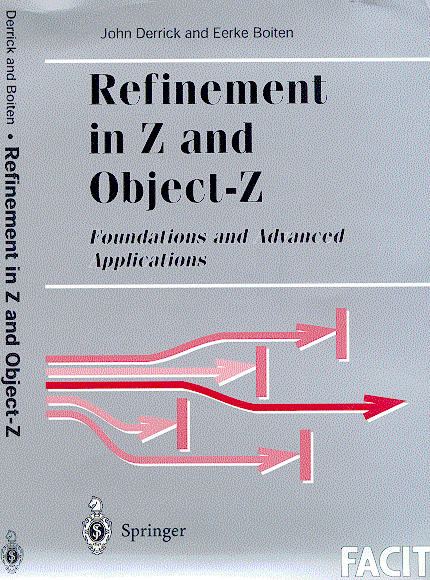

This collection of WWW pages is mostly automatically generated from LaTeX files containing the bibliographical notes (as in the book, with additions since publication), errata, and bibliography. The structure follows that of the book. Currently it only addresses the first edition.
If you find an error or would like to point out a paper that is pertinent to something discussed in a particular section of the book, please tell us by email.
Review in Journal of Logic and Computation.

For an overview of our work in refinement, see the
Refinement in
State Based Systems homepage.